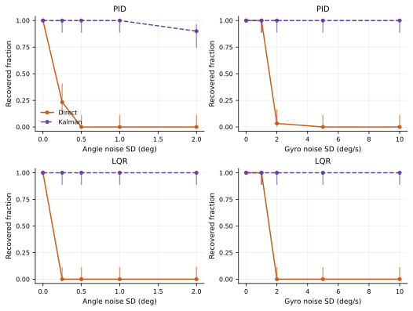
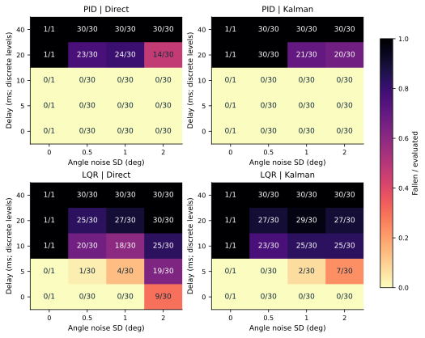
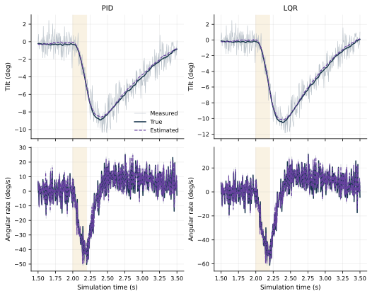
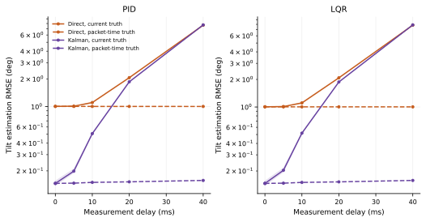
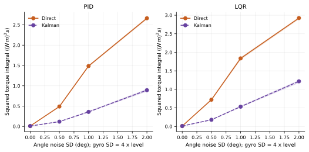

MICHAEL AGBO / STEP 3
Noisy sensing and measurement delay
8,340 trials. Three physical conditions. Direct and Kalman-filtered observations.
Scope and main findings
This Step 3 supplement extends the original planar balancing-robot study with noisy angle and gyro measurements, delayed observation packets, and a causal two-state Kalman estimator. It reports 8,340 unique closed-loop trials and six perfect-observation baselines. The original physics, PID-type gains, LQR gains, torque limits and recovery definition remain fixed. It is a within-controller sensing experiment, not a matched-tuning comparison of controller classes.
The central distinction is between estimating a past measurement accurately and knowing the current robot state. Filtering reduces tilt noise in the tested nominal setting, but does not compensate for packet delay. Persistent measurement noise can also prevent the original strict final-window recovery criterion from being met even when the robot remains upright. Outcomes therefore separate recovery, upright-but-unsettled behaviour, and falls.
| Control | Input | Delay ms | Current RMSE deg | Packet-time RMSE deg | Falls |
|---|---|---|---|---|---|
| PID | direct | 0 | 1.005 | 1.005 | 0/30 |
| PID | direct | 40 | 7.671 | 1.003 | 0/30 |
| PID | kalman | 0 | 0.146 | 0.146 | 0/30 |
| PID | kalman | 40 | 7.728 | 0.158 | 0/30 |
| LQR | direct | 0 | 1.005 | 1.005 | 0/30 |
| LQR | direct | 40 | 7.837 | 1.003 | 0/30 |
| LQR | kalman | 0 | 0.146 | 0.146 | 0/30 |
| LQR | kalman | 40 | 7.893 | 0.158 | 0/30 |
Every trial in that table remains upright but is labelled unsettled: none achieves the final one-second dwell within all original bounds. The roughly sevenfold reduction in zero-delay median tilt RMSE therefore does not by itself establish task recovery. At 40 ms, the Kalman estimate still tracks the old packet-time tilt closely while its mismatch with current tilt is several degrees.
1 Observation model and causality
At each 5 ms sample, independent zero-mean Gaussian noise is added to true tilt and true angular rate. These are explicit angle and gyro surrogates. They do not model accelerometer-specific force, sensor bias, drift, clipping, quantisation or dropout. Position and translational speed are ideal encoder-like channels with no additive noise. The entire four-component packet receives the same configured delay.
With D delay steps, the packet index delivered at step k is max(0,k-D). A noisy packet acquired at t=0 is available for initialisation and is held while the pipeline fills; no negative-time trajectory or future observation is invented. Each newly delivered packet updates the filter once. Repeated startup packets are held without repeated correction or time propagation. The controller receives only the delivered vector or its filtered counterpart. Ground truth is used separately for plant dynamics, displays and outcome evaluation.
2 Kalman estimator
The estimator state is tilt and angular rate. Its transition assumes constant angular rate between measurement timestamps. F has rows [1,dt] and [0,1]; H is the identity. A per-interval random angular acceleration with standard deviation 50 rad/s² gives Q = sigma_a² G G-transpose, with G = [dt²/2, dt]-transpose. This engineering setting was fixed before the sweep and was not optimised on its results. R is diagonal, using the configured angle and gyro noise variances in radians. The first estimate equals the first measured angle/rate, with initial covariance R.
Prediction is followed by scalar angle and gyro corrections; independent measurement channels make this equivalent to a joint linear Kalman update. Zero noise in both channels returns the measurements exactly. Ideal position and velocity packet values are combined with the estimated attitude to form the four-component control input. No motor model, external-force input or truth-fed correction enters the estimator. It does not extrapolate from a delayed packet to the current control time.
The recursive prediction/correction structure follows the standard linear Kalman formulation [1]. The robot is nonlinear and its real angular acceleration is not the assumed white random process, so the filter does not carry a general optimality or stability guarantee here. Delay-aware balancing controllers are an established research area [2]; this supplement measures an uncompensated-delay baseline rather than claiming a new delay-compensation method.
3 Frozen experimental protocol
| Condition | Initial tilt deg | Force N | Torque limit N m |
|---|---|---|---|
| nominal | 5 | 5 | 0.7 |
| large_push | 0 | 20 | 0.7 |
| low_torque | 0 | 5 | 0.2 |
The angle-only sweep uses SDs 0, 0.25, 0.5, 1 and 2 deg, with zero gyro noise and delay. The gyro-only sweep uses SDs 0, 1, 2, 5 and 10 deg/s, with zero angle noise and delay. The combined sweep uses angle SDs 0, 0.5, 1 and 2 deg, gyro SD four times those numerical values, and delays 0, 5, 10, 20 and 40 ms. Coincident configurations across sweep families are deduplicated.
Each noisy configuration uses 30 seeds, seed_i = 1001 + 104729 i for i=0..29. The same random-number streams are used across controller and observer alternatives. A 32-bit linear-congruential generator and Box-Muller transform produce the angle/gyro innovations. Zero-noise configurations are deterministic and run once, irrespective of seed. There are 28 unique sensing settings, 695 runs per controller-observer-scenario combination, and 8,340 total sensing runs. Six additional ideal baselines reproduce the corresponding archived Python outcomes and metrics.
The protocol was written before executing this sweep but is not externally preregistered. Conditions were chosen with knowledge of the earlier nominal study; this is exploratory work, not an independent held-out benchmark. Controller gains are frozen to isolate observation changes. Neither gains nor the recovery thresholds were adjusted after viewing these results.
4 Outcomes, error measures and uncertainty
A fall is declared at a control endpoint when true absolute tilt reaches 45 deg. A run otherwise stops at 10 s. Recovery requires at least the final one-second dwell within 1 deg tilt, 0.03 m position, and 0.03 m/s speed, all from true state. Recovery time is measured from the end of the pulse. Upright trials that miss this criterion are unsettled. Persistent noise makes this all-samples dwell test demanding; that limitation is reported rather than hidden by redefining success.
Current-state tilt RMSE compares the controller estimate with true tilt at the same simulation time. Packet-time RMSE compares it with true tilt at the packet acquisition timestamp. Trial RMSE includes samples from initialisation through termination. An early fall shortens that window, so RMSE from different fall times must not be interpreted as an unconditional performance ranking. The nominal RMSE and effort figures explicitly use groups in which every run lasts 10 s.
Wilson 95% intervals describe event fractions across the 30 pseudorandom noise realisations at one fixed condition. Deterministic cells receive no interval. Interquartile shading describes between-seed variation, not uncertainty in a median. Paired alternatives share seeds; their outcomes are not independent groups. No significance test, multiple-comparison claim, or pooled deployment-success probability is reported. In particular, zero falls in 30 trials does not establish zero failure probability.
5 Independent noise channels

The two sweeps separate the effect of angle noise from gyro noise. The estimator processes both channels, but its process covariance lets angular rate follow the gyro closely during fast balancing motion. Better angle estimates therefore do not guarantee that velocity fluctuations remain within the strict recovery dwell. These findings are specific to the selected measurement surrogates, gains and filter covariance.
6 Combined noise and delay

The large-push condition exposes interaction between packet delay, torque saturation and the two fixed feedback laws. The table below retains complete counts across all sensing settings in each scenario. These totals weight each noisy setting by 30 seeds and each deterministic setting once. They are a descriptive inventory only, not an equal-weight average over settings or a probability for an operational population.
| Scenario | Control | Input | R | U | F |
|---|---|---|---|---|---|
| nominal | PID | direct | 39 | 656 | 0 |
| nominal | PID | kalman | 238 | 457 | 0 |
| nominal | LQR | direct | 31 | 661 | 3 |
| nominal | LQR | kalman | 241 | 451 | 3 |
| large_push | PID | direct | 1 | 541 | 153 |
| large_push | PID | kalman | 31 | 501 | 163 |
| large_push | LQR | direct | 31 | 393 | 271 |
| large_push | LQR | kalman | 241 | 196 | 258 |
| low_torque | PID | direct | 46 | 559 | 90 |
| low_torque | PID | kalman | 239 | 368 | 88 |
| low_torque | LQR | direct | 36 | 553 | 106 |
| low_torque | LQR | kalman | 241 | 338 | 116 |
7 True, measured and estimated trajectories

The interactive 3D page now offers perfect state, direct noisy sensing and Kalman-filtered sensing; angle-noise, gyro-noise and delay controls; a seed field; and a purple estimate outline. The live traces can display tilt, angular rate, position or speed. Solid robot geometry always follows true plant state. Manual force pulses remain available and use the same physics as the original 2D view. Live-run JSON export preserves settings, force events, true states, delivered observations and estimates.
8 Noise reduction versus delay mismatch

The separation between packet-time and current-state error is the main diagnostic result. Filtering removes part of the acquisition noise, while an old but clean estimate still drives a rapidly moving plant. Adding a predictor could address that mismatch, but its design and independent evaluation are future work. The present data do not establish that the filter is generally safer or more robust than direct sensing.
9 Control effort under persistent noise

10 Verification and limitations
Automated checks establish exact perfect-sensing state/torque agreement with the existing JavaScript model for both controllers; agreement of selected ideal trials with archived Python results; equality of the scalar Kalman implementation with an independent NumPy dense-matrix/Joseph-covariance reference; causal packet timing and startup holding; seed repeatability; noise-statistics sanity; and positive-semidefinite filter covariance. UI tests cover mode changes, seeded resets, delay readout, state selection and the existing live-force controls. The tests use a renderer mock and do not verify WebGL pixels. Browser access was unavailable for visual inspection.
This remains a planar model without wheel slip, motor electrical dynamics, realistic IMU acceleration, noisy wheel encoders, packet loss or hardware calibration. Sensor noise magnitudes are illustrative, not measured device specifications. Thirty seeds give limited resolution for rare failures. The filter assumes configured sensor variances are known, and only one process-covariance setting is evaluated. A matched tuning study, additional held-out conditions and hardware or independent-simulator validation are still required for stronger research claims.
11 Reproduction and next step
Run node run_sensing.js from the project root, then publication/.venv/Scripts/python.exe publication/build_sensing_report.py. The JSON protocol, protocol snapshot, original settings and source hashes are archived. Per-trial results and per-cell summaries are in results/sensing; vector PDF/SVG and 600 dpi PNG figures are in publication/figures. This report is a separate Step 3 supplement: the original manuscript and its deterministic data remain unchanged. Step 4, physically consistent payload variation, has not been implemented.
The next sensing extension should compare a causal delay predictor against these frozen baselines, using a declared tuning budget and held-out conditions. Before combining sensing with payload changes, define performance measures appropriate to persistent noise alongside the strict original dwell criterion. The author should review the scientific claims, software and AI-assisted drafting before integrating the supplement into a submission.
References
[1] G. Welch and G. Bishop. An Introduction to the Kalman Filter. UNC Technical Report TR 95-041, version updated 1 March 2004. Source
[2] Z. Music et al. Design of a Networked Controller for a Two-Wheeled Inverted Pendulum Robot. arXiv:1812.03071v2, 2019; related publication DOI 10.1016/j.ifacol.2019.12.153. Source